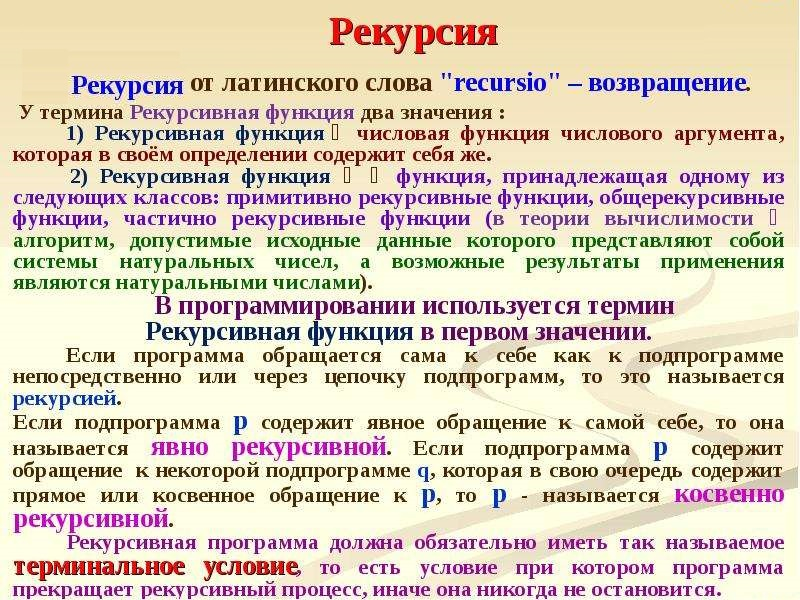

Простыми словами, рекурсия – определение части функции (метода) через саму себя, то есть это функция, которая вызывает саму себя, непосредственно (в своём теле) или косвенно (через другую функцию).

Рекурсия – это сведение задачи к самой себе. Задача так же, как и в предыдущем методе, сводится к более простой. Но эта более простая задача имеет ту же формулировку, что и исходная, с той лишь разницей, что решаться она должна для более простых исходных данных. Это чистый вариант упрощения исходных данных.